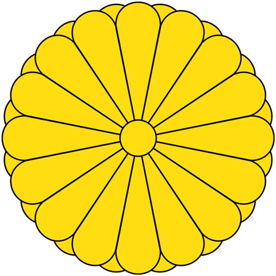
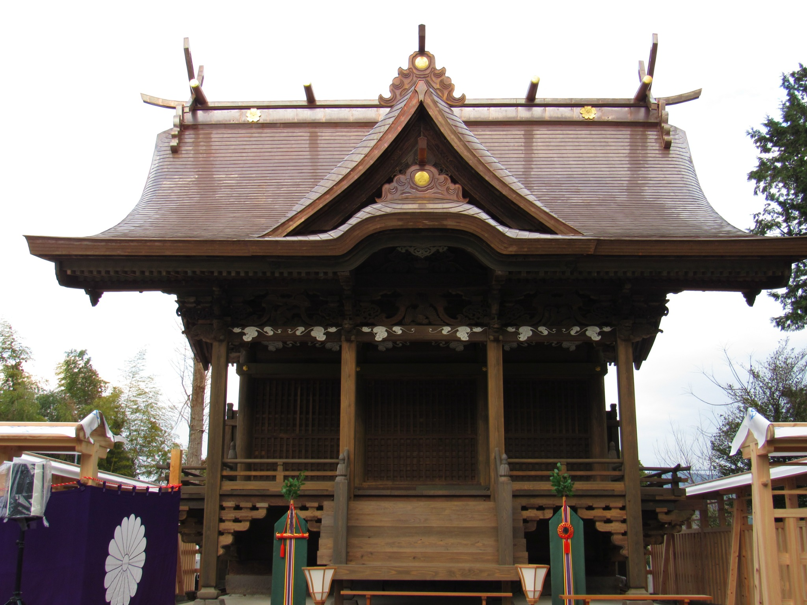
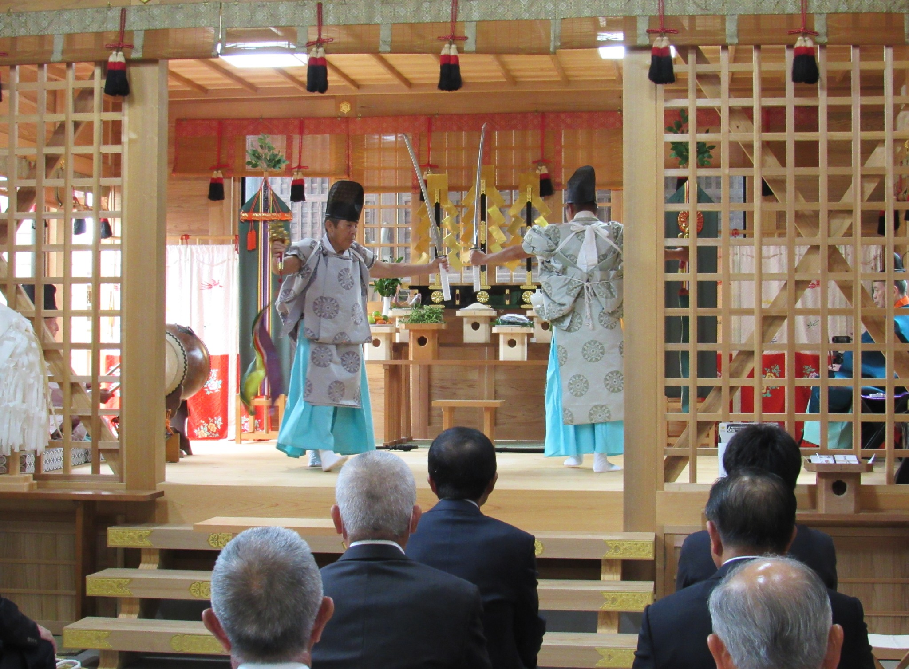
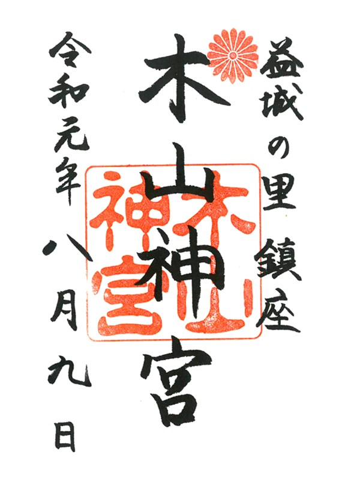

熊本県益城町鎮座

木山神宮公式ホームページへようこそ
木山神宮は熊本県益城町の総鎮守として古くから地域の人々の信仰を集めています。 長い歴史の中で地域の繁栄と人々の幸せを見守り続け、 現在も厄除・家内安全・交通安全・商売繁盛・安産・合格祈願など 多くのご祈願を奉仕しております。

一年を通して歳旦祭・祈年祭・夏越祭・例大祭・新嘗祭など 様々な祭典を斎行しております。

木山神宮では御参拝の証として御朱印を授与しております。
〒861-2241
熊本県上益城郡益城町木山1437
TEL：096-286-XXXX